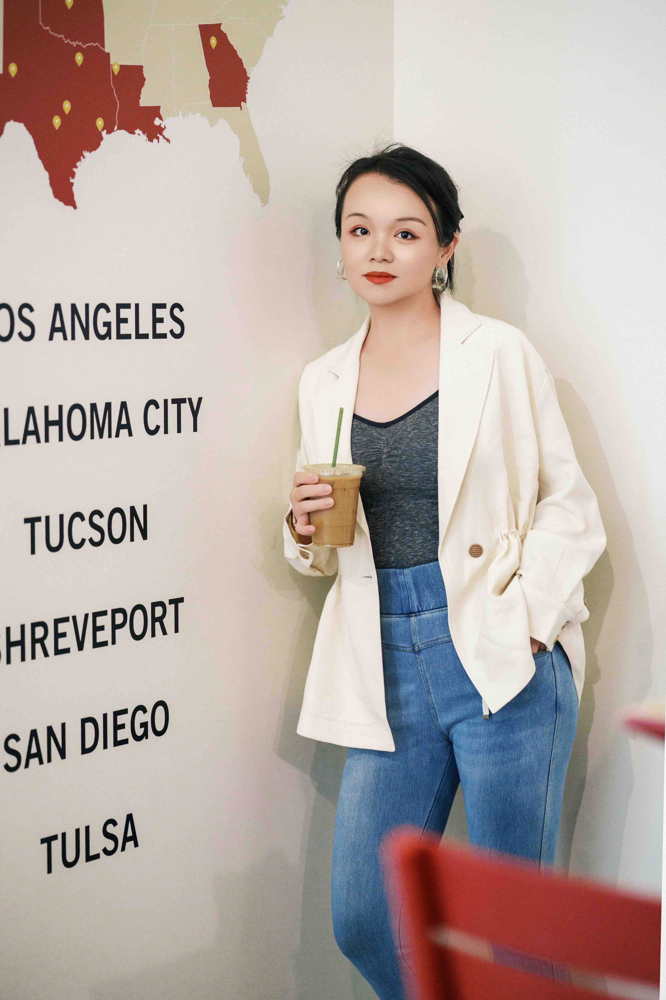

Frisco · Plano · Dallas · DFW
Every ordinary moment
is a story worth keeping.
Documentary family photography — candid, unhurried, real.
View My Workscroll
Frisco · Plano · Dallas · DFW
Documentary family photography — candid, unhurried, real.
View My Work
Hello, I'm Stephanie
Not posed. Not performative. I'm a documentary family photographer based in Frisco, TX — and I believe the moments you'll treasure most are the ones happening right now, in your everyday life.
The way your kids pile onto the couch. The way your toddler reaches for your hand. The way your family laughs at the dinner table. These are the images that will matter in 20 years — and they're happening today.
I spent years watching the photography world before I ever picked up a camera. What drew me in wasn't the perfectly staged images — it was the ones that felt real. That's the kind of work I do for families across Frisco, Plano, Allen, McKinney, and the greater Dallas area.
Let's ConnectMy Philosophy
I don't direct. I observe. The best images come when families forget I'm there.
Tuesday afternoons. Bedtime routines. Backyard moments. These are the stories your children will one day want to see.
Yours is worth preserving — exactly as it is right now, in this season of life.